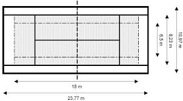
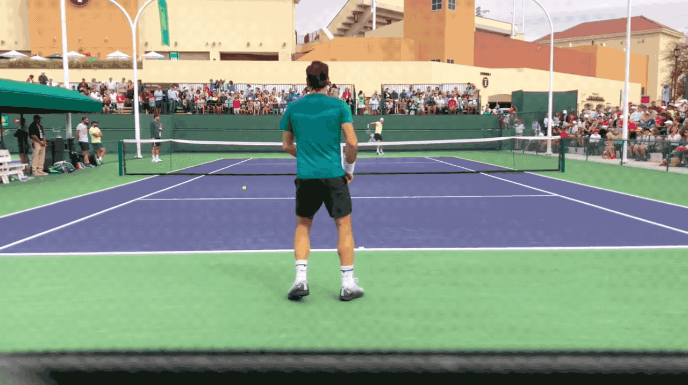
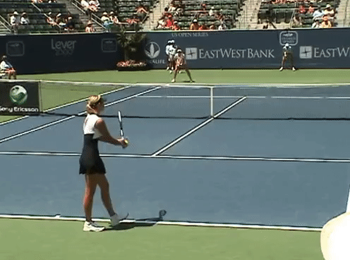

La présentation du sport appelé le tennis
Le tennis est un sport de raquette qui oppose soit deux joueurs soit quatre joueurs qui forment deux équipes de deux. Les joueurs utilisent une raquette cordée verticalement et horizontalement à une tension variant avec la puissance ou l'effet que l'on veut obtenir.
Sur quoi joue-t-on quand on fait du tennis ?
Dans ce sport, nous jouons sur un terrain de tennis avec plusieurs lignes continues marquées à différents endroits du terrain.
Les différents coups durant un match de tennis
 Le coup droit
Le coup droit
|
 Le revers |  Le service |
Les différentes marques de raquettes vendues
La marque Wilson comporte plusieurs gammes de raquettes qui varient en fonction du style de jeu du joueur ou de la joueuse.
Il y a la gamme Wilson Burn, la plus puissante, qui est axée sur la puissance facile.
La gamme Wilson Ultra est orientée sur la polyvalence et une puissance intermédiaire des frappes.
Et pour finir, la gamme Wilson Blade qui est plus exigeante, c'est à dire qu'elle sont puissantes mais aussi légèrement allongée. Cela implique donc une certaine maniabilité à l'utilisation.